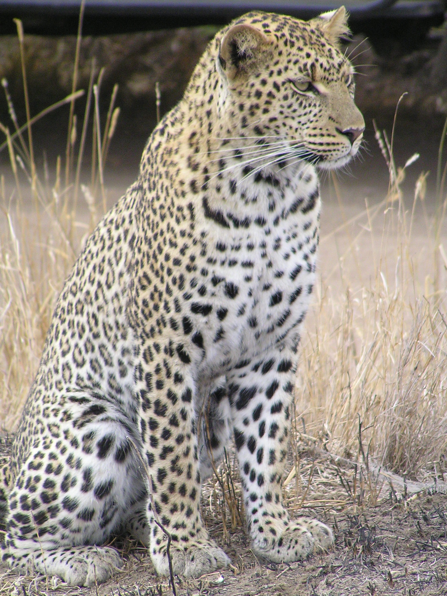

Characteristics
The leopard's fur is generally soft and thick, notably softer on the belly than on the back.[20] Its skin colour varies between individuals from pale yellowish to dark golden with dark spots grouped in rosettes. Its belly is whitish and its ringed tail is shorter than its body. Its pupils are round.[21] Leopards living in arid regions are pale cream, yellowish to ochraceous and rufous in colour; those living in forests and mountains are much darker and deep golden. Spots fade toward the white underbelly and the insides and lower parts of the legs.[22] Rosettes are circular in East African leopard populations, and tend to be squarish in Southern African and larger in Asian leopard populations. The fur tends to be grayish in colder climates, and dark golden in rain forest habitats.[9] The pattern of the rosettes is unique in each individual.[23][24] Its fur tends to grow longer in colder climates.[25] The guard hairs protecting the basal hairs are short, 3–4 mm (1⁄8–5⁄32 in) in face and head, and increase in length toward the flanks and the belly to about 25–30 mm (1–1 1⁄8 in). Juveniles have woolly fur, and appear to be dark-coloured due to the densely arranged spots.[23][26] Its white-tipped tail is about 60–100 cm (24–39 in) long, white underneath and with spots that form incomplete bands toward the tail's end.[27] The leopard's rosettes differ from those of the jaguar, which are darker and with smaller spots inside. The cheetah has small round spots without any rosettes.[21] Like most cat species, the leopard has a diploid chromosome number of 38.[28] The chromosomes include four acrocentric, five metacentric, seven submetacentric and two telocentric pairs